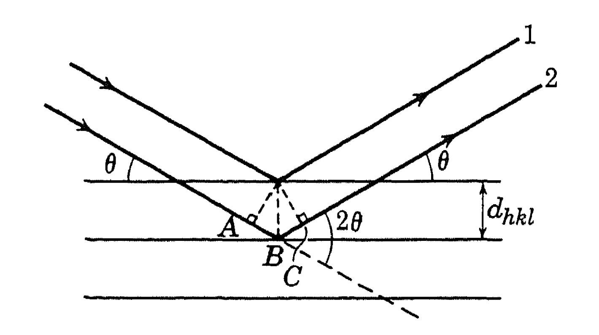

Miller indices and Bragg's diffraction
Miller indices: the lattice points forming a space-lattice may be thought of as occupying various sets of parallel planes. In order to specify the orientation of a set of planes, Miller indices are used. Suppose a particular plane of given set has intercepts p\textbf{a}, q\textbf{b}, and r\textbf{c} with the crystal axes, where \textbf{a}, \textbf{b} and \textbf{c} are the lattice constants. The Miller indices of the set of planes are then given by three numbers h, k, l such that
with the condition that h, k, and l are the smallest integers satisfying above equation. Remember that these set of indices refer to a set of parallel planes, not a specific plane. The plane is represented by (hkl) while the direction is represented by [hkl].
The distance between successive (hkl) planes can be calculated. In case cubic system,
Bragg's x-ray diffraction:

Bragg considered x-ray diffraction from a crystal as a problem of reflection from atomic planes. Consider a set of parallel atomic planes of Miller indices (hkl), the distance between successive planes being d_{hkl}. From the above figure, we see that rays 1 and 2 can reinforce (interfere constructively) each other in the reflected direction only if their path differences is an integer times wavelength of x-ray \lambda. Thus the condition for reflection from the set of planes under consideration:
with n = 0, 1, 2, 3, ...